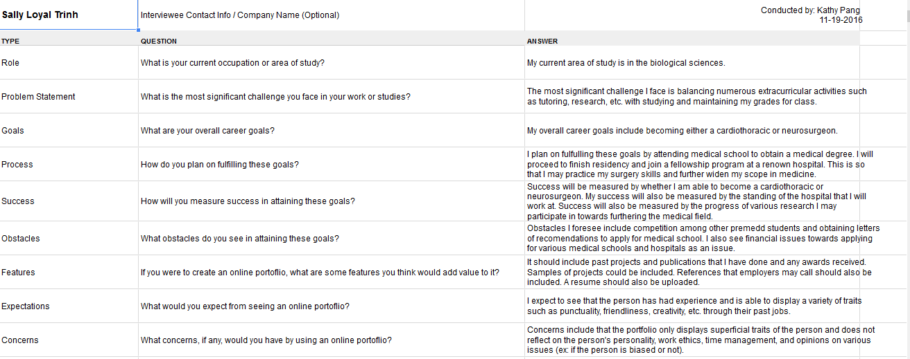
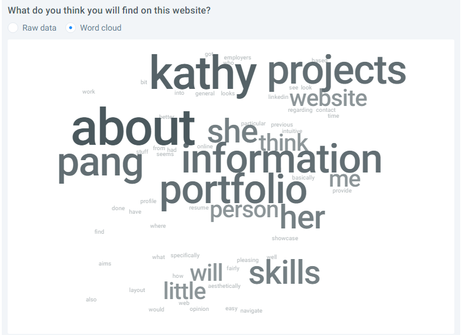

User Research
- User Interviews
- Competitor Analysis
- Feature Value Matrix
- Feature Prioritization
User interviews are important to conduct in order to gather background information to learn about who the possible users for a product is. Learning about the users help the designer further develop the product and gives them a better understanding of what possible users of different backgrounds may expect from the product. It is important to interview a variety of users to consider and understand their needs. In the case of an online portfolio product, it is important for user interviews to include questions about their educational background, goals, and expectations and concerns for the product.
View Interviews. A competitor analysis is an evaluation of similar competing products in the market and evaluating the features, strengths and weaknesses compared to your own product. Competitor analysis are important to help improve a designer’s own product by being able to analyze what features work well and which do not and whether or not it is stronger than your own in order to improve your own product. For my competitors, I chose 2 classmates and 2 other industry UI/UX designers. My classmates were reviewed because since they are also graduating this year and taking this course they are potential competitors who may be applying for the same jobs I am. Other industry UI/UX designers were reviewed as competitors to gauge how competitive the field I am trying to get into is and evaluate what works well for personal portfolios of people already in the field.
View Analysis.The Feature value matrix is a list of features that are implemented in the product and possible features that I intend to implement. It is a method to rate and prioritize important features based off their user value, business value, and development efforts. The majority of the features I listed on the feature value matrix was included because they were significant features for a portfolio and they were already fulfilled on my product. However, I also added a “resume” feature on the list because it is important for anyone visiting my portfolio to be able to find an overview of my experiences and possibly print out a resume for reference.
View Matrix.Each feature was prioritized based off of user value, business value and development efforts. Depending how much user or business value each feature had it would receive a score of anywhere between 1 to 5 with 1 meaning it had the most value and 5 meaning it had the lowest value. Lastly, the features were all ranked according to how hard it would be to develop with 1 being the easiest and 5 being the hardest. The importance of using this rating scale and prioritization method is because there are always time constraints and for a designer building an interface. Thus, we must implement what has the most value, but at the same time does not take too long to implement.
View Results.User Testing
- Cognitive Walkthrough
- User Stories
- User Test
A cognitive walkthrough is a set of tasks and/or questions given to a user tester in order to evaluate the effectiveness and success of a product. These are often given to users who may be unfamiliar or new to the product in order to ensure that the product is usable by all kinds of users without needing additional guidance. Cognitive walkthroughs are important to see how users will go about using the product on their own, which may or may not be what the designers expected. There were no real challenges when I conducted these, only some helpful, but unexpected answers that were received.
View Here.The importance of user stories is that they provide a better understanding of what features are important, what the purpose of those features may be and why a user may be wanting to use those features. User stories explain the reasoning behind features that will provide a better user interface and user experience. My user stories were influenced by both existing and new features that I wanted to ensure had a meaningful purpose when being used by the main users that I anticipate would access my portfolio. In this case, most of my user stories were features that a hiring manager, job recruiter or interviewer may look for or find helpful when trying to decide whether or not I am the right candidate.
View User Stories.The two types of user test I conducted was a click test and a 5 seconds test. The click test was conducted in order to evaluate whether or not it was obvious to users where they should look/click to find more information about each project on my portfolio. As I did not include any visual cues on the project pictures, I suspected that it may not had been obvious to some users that it was expandable. The 5 second test was chosen because I wanted to know what the first impressions a user would get from only visiting the home section briefly and what their first impressions of the overall aesthetics design was. The reasoning is because first impressions are important and can sometimes make or break a product, even resulting in a user leaving the site if they did not look what they saw at a glance.
View 5 Sec Test Results. View Click Test Results.
Summary of Findings
- User Tests
- User Research
- Overall
Based off the user tests, I found that most of the testers were able to gauge what the website was about within the first 5 seconds of viewing the home page. Answers given ranged from describing the website to being a portfolio, an overview of my work, and simply general information about who Kathy was. In terms of web design, many users found that what they liked most aesthetically was the simplicity and clean design of the website. Most testers liked how the sections were clearly divided in a fashion that was easy to navigate to and understand, without being too cluttered. However, in general many user testers also commented that they disliked that the overall design of the website was a bit plain, perhaps too simple, and seemed to be somewhat lacking of information overall. Testers suggested that the home page could include more pictures, descriptions, and/or a better short tagline or introductory statement to portray a better idea of what Kathy is about. From the cognitive walkthrough, user testers also gave some feedback that website lacked visual cues for both the arrow navigations and the project pictures and because of this, it was not obvious to the user that they were clickable.
From the user research, I concluded that other important sections that could be helpful to include to create a stronger online portfolio would be a resume section, achievements section, and a section for current or past employments with references that can be called. The user research also helped me realize that there are animations or features that could be implemented to better showcase my skills or provide a smoother user experience. Drawing from the interviews, users expressed that they would also expect to see a person’s key traits be displayed through their experiences. Their main concern for an online portfolio was that I could be difficult to find information quickly and that online portfolios are not an accurate representation of who the person is outside of their academic and professional background. For instance, online portfolios would likely lack portrayal of a person’s work ethics, time management, personality, etc. There were also some concerns for privacy of personal information being displayed.
Overall, the findings suggested that the website had too much whitespace and could do with more descriptive personal and project information, photos, be better organized and be more user friendly to successfully become an interesting and personalized portfolio. It also showed that that are a lot of small details that should be kept in mind when designing a web portfolio such as making usage of margins, font size and formats, and truly reflecting my personality into my work. A challenge I encountered while conducting my user research and testing’s were finding a variety of different people of different backgrounds to interview and complete my usability testing’s in order to get a better perspective of how to improve my product. Other challenges I faced was deciding how to rank and prioritize certain features on the feature value graph and matrix and ultimately, not having time to properly change and implement all the features and functions that I want to implement after conducing my user research and testing.
Incorporation of Findings
- Formatting
- Organization
- Content
While I have not had the time to incorporate most of my findings so far, I plan to make a lot of changes to formatting, organization, content, and appearances of the overall web portfolio. In terms of formatting, I currently have the words in each section centered and spanning across the entire width of the webpage. However, I want to take readability and user experience into mind and add margins on both sides of the page to limit the amount of words on each line. This is because I received a feedback mentioning that studies show it is harder to read lines that span too wide and that is why newspapers tend to make smaller sections; I want to incorporate this feedback as I believe it will improve the overall user experience and appearance of my website. As mentioned, each section contains text that is centered and I believe this is not the best approach for every section as I also received feedback that it made the text hard to read at times. In my skills section, I plan to un-center everything and simply list my skills and courses in a list with text that aligns left.
For the organization of my website, after conducting user tests and research, I want to change the projects section to be more easily accessible. By this, I mean I will re-order the projects by the type of project (ui/ux, game design, mobile application, and other) and display each project under the correct label. I also intend to display pictures for every project on the left and a small description for each to the right of the project, where clicking the picture will open a popup with, if relevant, more images of the project, a detailed description of the project and what my role was. I will also add visual cues to the pictures of the projects to make it obvious to the user that they can click it to get more information about the project. For example, for desktop version I may make it where hovering will gray it out or add dots for the mobile version to indicate there is more. This is necessary because I received feedback that it is not obvious to the user that some of the pictures or links are clickable on my webpage and I want it to be very clear to the users that should they want more information they know where to find it. In terms of visual cues, I will also implement an animation to the arrow navigation located at the home screen and at the bottom of the page to make it clearer to users that it is clickable. I also received feedback that commented on the somewhat difficult way to navigate between sections, so in order to fix this issue, I want to change the current navigation bar to be a fixed navigation so that the users can navigate to the desired section more easily.
Based off my user research and testing, I want to include more personality into my website by incorporating more of who I am like pictures of me traveling or visiting interesting places, demonstrations of my hobbies, and personal projects outside of school. Beyond what has already been mentioned, I will also implement more to the content of the about section and attach either a link or a picture of my resume directly in the skills section. In the contact section, I will also attach small icons to my social media profiles, namely LinkedIn and GitHub. Finally, I will also like to incorporate meaningful, but interesting animations on my website to showcase a bit more of my creative side and JavaScript skills while making my website more aesthetically pleasing.